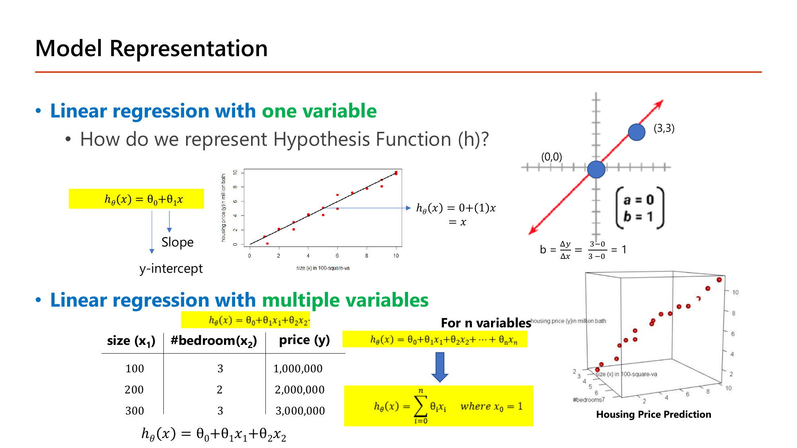
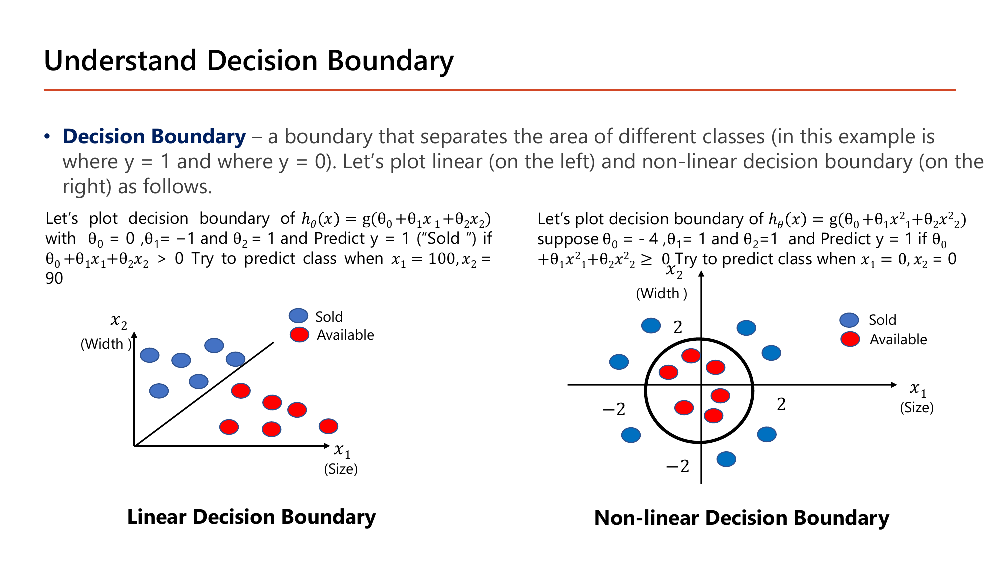
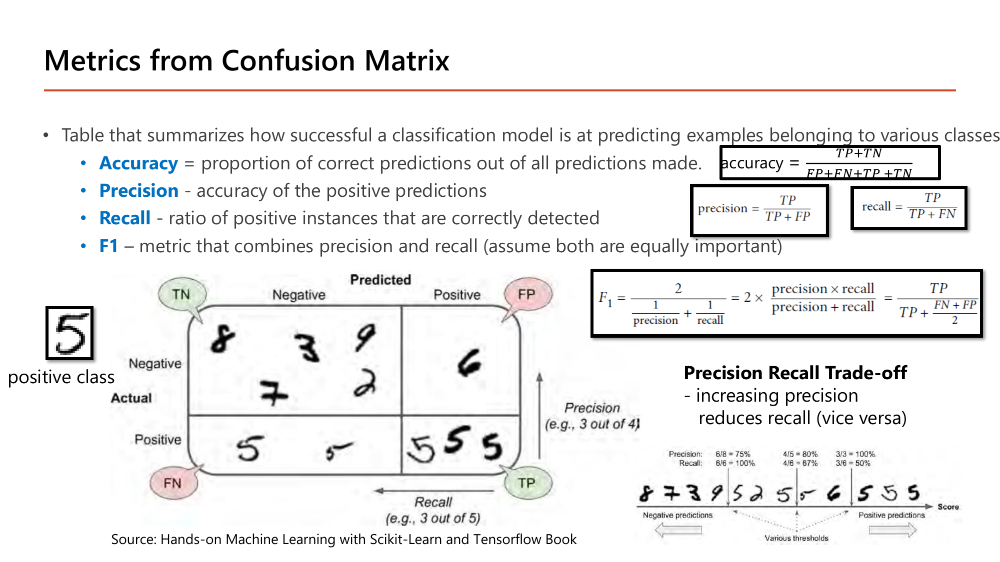
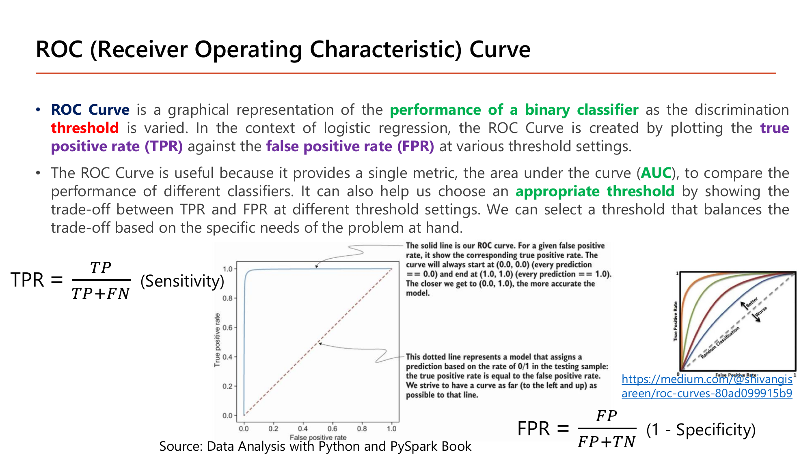
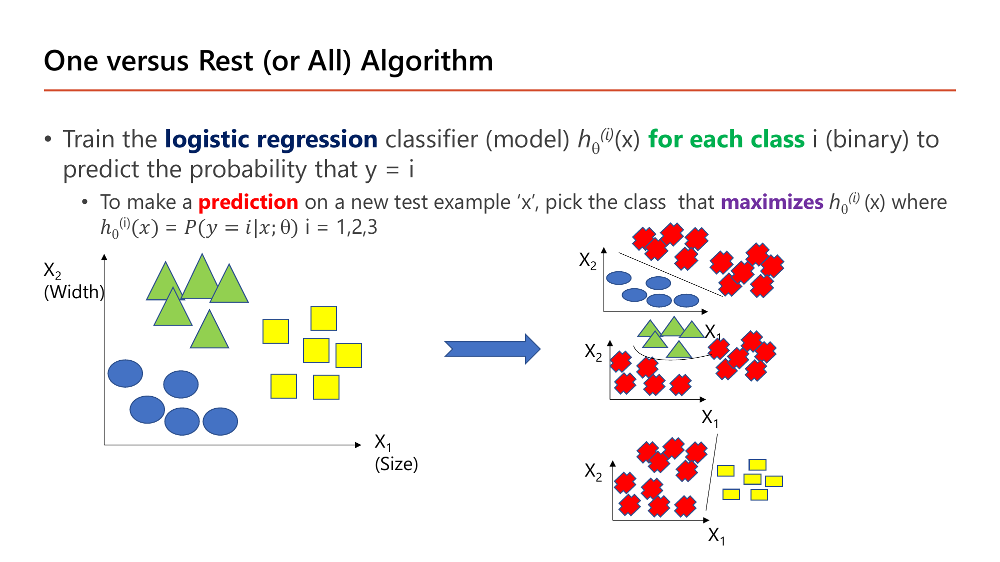
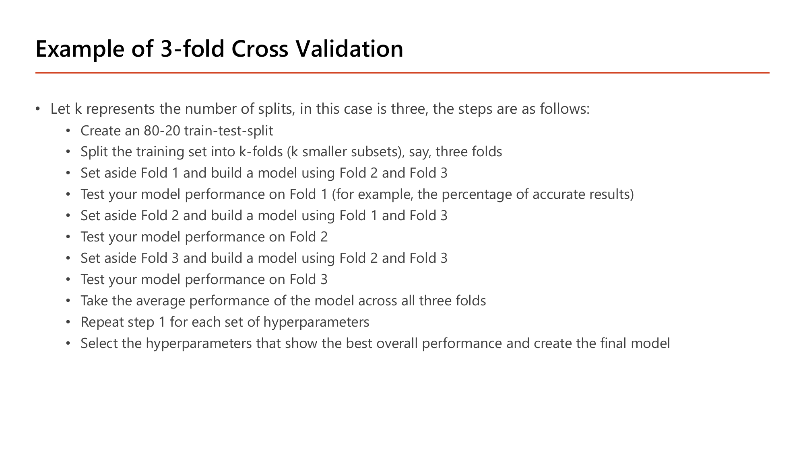
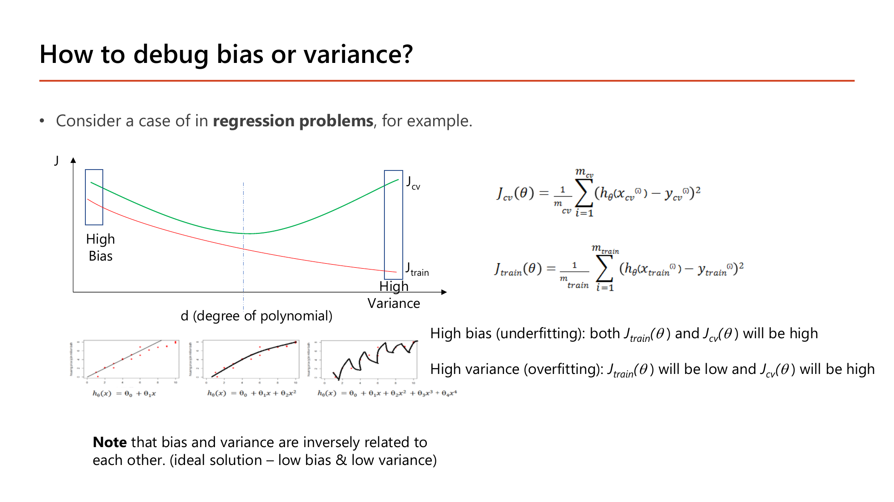
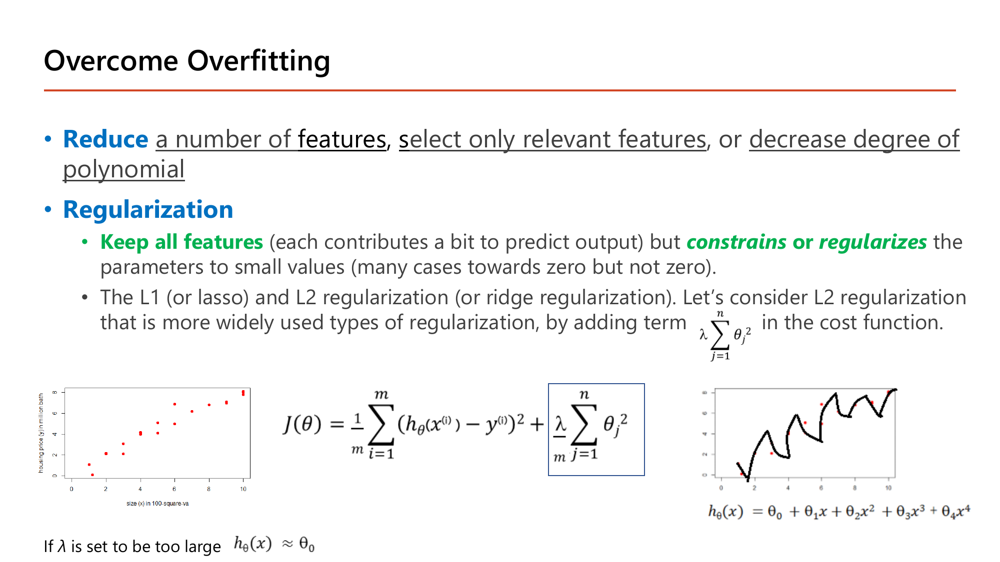
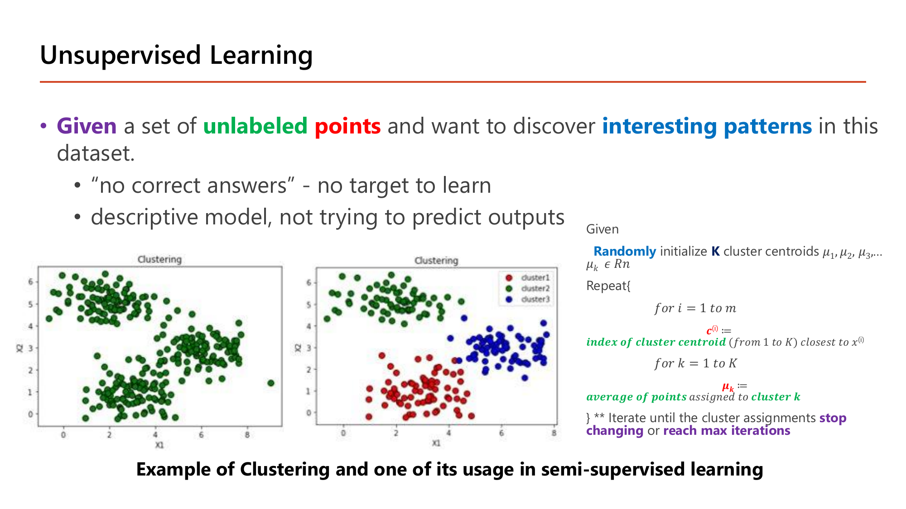

Lecture1.pdf · 2603520 Deep Learning
Lecture นี้ปูพื้น ML ก่อนเข้า Deep Learning จริง — แนวคิด cost function, gradient descent, sigmoid, softmax, regularization ที่เรียนในบทนี้จะถูกใช้ซ้ำ "เหมือนเดิมทุกตัวอักษร" ในทุก Lecture ถัดไป (แค่เปลี่ยนจาก 1 node เป็นหลาย node/หลาย layer). ถ้าคำนวณมือได้ในบทนี้ Lesson 2–6 ก็คือแค่ต่อยอดสัญกรณ์ ไม่ใช่ต่อยอดหลักการ.
| สัญลักษณ์ | ความหมายแบบภาษาคน | ตัวอย่าง |
|---|---|---|
| \(m\) | จำนวนตัวอย่างข้อมูล (จำนวนแถว) | บ้าน 3 หลัง ⇒ \(m=3\) |
| \(x\) | input / feature (สิ่งที่รู้แล้ว) | ขนาดบ้าน 3,000 ตร.ฟุต |
| \(y\) | label / คำตอบจริง (สิ่งที่อยากทำนาย) | ราคาบ้านจริง |
| \((x^{(i)}, y^{(i)})\) | ตัวอย่างที่ \(i\) (เลขบนในวงเล็บคือลำดับ ไม่ใช่เลขยกกำลัง) | บ้านหลังที่ 2 |
| \(\theta\) | parameter — ตัวเลขที่โมเดลเรียนรู้เอง | \(\theta_0, \theta_1\) |
| \(h_\theta(x)\) | hypothesis — สูตรทำนายของโมเดล (อ่านว่า "ค่าทำนาย") | \(\theta_0+\theta_1 x\) |
| \(J(\theta)\) | cost — ตัวเลขบอกว่าโมเดล "ผิด" รวมเท่าไร (ยิ่งต่ำยิ่งดี) | \(J = 4.67\) |
| \(\alpha\) | learning rate — ขนาดก้าวที่ปรับ \(\theta\) แต่ละครั้ง | \(\alpha = 0.05\) |
งานทั้งหมดของ ML คือ: หาค่า \(\theta\) ที่ทำให้ \(J(\theta)\) ต่ำที่สุด.
สไลด์เกริ่นด้วยเหตุผล 2 อย่างว่าทำไม Deep Learning เอาชนะ Machine Learning แบบดั้งเดิมได้:
เส้นเวลานี้บอกว่า "backpropagation" (Lesson 3) ไม่ใช่ของใหม่ — Yann LeCun ใช้มันคู่กับ CNN อ่านตัวเลขลายมือสำเร็จตั้งแต่ปี 1989. แต่ Deep Learning ระเบิดความนิยมจริงราวปี 2010 เพราะสองเงื่อนไขที่ขาดมาครบพร้อมกัน: ข้อมูลปริมาณมาก และ พลังประมวลผล (GPU). กราฟด้านขวาของสไลด์แสดงจำนวนพารามิเตอร์ของโมเดลภาษาที่พุ่งขึ้นแบบ exponential หลังปี 2017 (Transformer) เพราะสองเงื่อนไขนี้โตต่อเนื่อง.

ลองเล่นเครื่องมือนี้คู่กับ Lesson 2–3: ปรับจำนวน hidden layer/node แล้วดู decision boundary เปลี่ยนสดๆ — เป็นภาพเดียวกับที่บทถัดไปจะพิสูจน์ด้วยมือว่า "node ยิ่งมาก เส้นแบ่งยิ่งซับซ้อนได้".
Linear regression = ทำนายตัวเลข (เช่นราคา) ด้วยสมการเส้นตรง สไลด์เริ่มด้วยตัวอย่างที่ทำมือได้: มีจุดข้อมูล \((0,0)\) และ \((3,3)\) แล้วถามว่า hypothesis
$$h_\theta(x) = \theta_0 + \theta_1 x$$\(\theta_0\) คือ "จุดตัดแกน y" (ค่าตอน \(x=0\)), \(\theta_1\) คือ "ความชัน" (x เพิ่ม 1 หน่วย y เพิ่มกี่หน่วย)

เส้นผ่านจุด \((0,0)\) แปลว่าตอน \(x=0\) ค่า \(y=0\) ⇒ \(\theta_0 = 0\)
สมการทำนายว่า \(y\) เท่ากับ \(x\) เป๊ะ เช่นถ้า \(x=5\) ⇒ ทำนาย \(y=5\) (ตรงกับจุดข้อมูลที่กระจายรอบเส้น \(y=x\) ในสไลด์)
หลายตัวแปร: เมื่อมี feature หลายตัว (ขนาดบ้าน \(x_1\), จำนวนห้องนอน \(x_2\)) แค่บวก term เพิ่ม โครงสร้างเดิมทุกประการ:
$$h_\theta(x) = \theta_0 + \theta_1 x_1 + \theta_2 x_2 + \dots + \theta_n x_n$$สไลด์ (หน้า 29) ใช้ Mean Squared Error (MSE): เอาความต่างระหว่างค่าทำนายกับค่าจริงมายกกำลังสอง (กันค่าบวก/ลบหักล้างกัน) แล้วเฉลี่ย
$$J(\theta) = \frac{1}{m}\sum_{i=1}^{m}\left(h_\theta(x^{(i)}) - y^{(i)}\right)^2$$ไล่ทุกตัวอย่าง: (ค่าทำนาย − ค่าจริง) ยกกำลังสอง แล้วเฉลี่ย — ยิ่งเส้นห่างจากจุดมาก ค่า J ยิ่งสูง

รูปชามคือกราฟของ \(J(\theta_0,\theta_1)\): แต่ละจุดบนพื้นคือ "ลองค่า \(\theta\) ชุดหนึ่ง" ความสูงคือ cost ของชุดนั้น จุดต่ำสุดของชามคือ \(\theta\) ที่ดีที่สุด. ชามนี้ นูน (convex) มีจุดต่ำสุดจุดเดียว ไม่มีหลุมหลอก — ไม่ว่าเริ่มที่ไหน การไต่ลงจะเจอจุดเดียวกันเสมอ (ต่างจาก neural network ที่ Lesson 3 จะเจอ cost ไม่นูน).
ยิ่งห่างจาก \(\theta_1=1\) ค่า J ยิ่งสูง: \(4.667 \to 1.167 \to 0\) — นี่คือ "ชามหน้าตัด" ของ J เมื่อขยับ \(\theta_1\) อย่างเดียว
เราไม่ต้องลองทุกค่า \(\theta\) — ใช้อัลกอริทึมที่ "ยืนตรงจุดหนึ่งบนชาม ดูความชัน แล้วก้าวลงเขา" ซ้ำไปเรื่อยๆ:
$$\theta_j := \theta_j - \alpha\,\frac{\partial J}{\partial \theta_j}\qquad(\text{อัปเดตทุก }\theta_j\text{ พร้อมกัน})$$ค่าใหม่ = ค่าเก่า − (ขนาดก้าว α) × (ความชันของ J ตรงจุดนี้)

ทำไมเครื่องหมายลบทำให้เดินเข้าหาจุดต่ำสุดได้ทั้งสองทาง (คำนวณเป็นกรณีๆ):
| ยืนตรงไหนของชาม | ความชัน \(\partial J/\partial\theta\) | \(-\alpha \cdot(\text{ความชัน})\) | \(\theta\) เปลี่ยนไปทาง |
|---|---|---|---|
| ฝั่งซ้าย (ทางลง) | ลบ, เช่น \(-4\) | \(-\alpha(-4) = +4\alpha\) บวก | เพิ่มขึ้น → ไปทางขวา เข้าหาจุดต่ำสุด |
| ฝั่งขวา (ทางขึ้น) | บวก, เช่น \(+4\) | \(-\alpha(+4) = -4\alpha\) ลบ | ลดลง → ไปทางซ้าย เข้าหาจุดต่ำสุด |
| ที่จุดต่ำสุด | \(0\) | \(0\) | ไม่ขยับ (หยุดเอง) |
เครื่องหมายลบจึงทำหน้าที่ "กลับทิศให้เข้าหาจุดต่ำสุดเสมอ" — เหตุผลที่สูตรเป็น \(-\) ไม่ใช่ \(+\).
cost ลดจาก 4.667 เหลือ 1.327
cost เหลือ 0.378
\(\theta_1 = 0.8483 \to 0.9191 \to \dots \to 1\) และ cost \(= 0.107 \to 0.031 \to \dots \to 0\)
ก้าวเล็กลงเรื่อยๆ เพราะความชันเล็กลงเมื่อเข้าใกล้ก้นชาม (−9.33 → −4.98 → …) จึงค่อยๆ ลู่เข้า \(\theta_1=1\) (คำตอบที่ถูก) เอง

ก้าวไกลจนข้ามจุดต่ำสุด (\(\theta_1=1\)) ไปฝั่งตรงข้าม; cost = 8.30 (สูงขึ้นจาก 4.67!)
ข้ามกลับอีกฝั่ง; cost = 14.75
ระยะห่างจากคำตอบ \(|\theta_1 - 1|\) เป็น \(1 \to 1.33 \to 1.78 \to 2.37\) ใหญ่ขึ้นทุกรอบ = diverge (ค่า J สูงขึ้นเรื่อยๆ ไม่ลู่เข้า).
สรุปผลของ \(\alpha\) (สไลด์หน้า 32–33):
ปัญหา: ถ้า feature หนึ่งมีสเกลใหญ่ (ขนาดบ้าน 1,000–5,000 ตร.ฟุต) แต่อีกตัวเล็ก (ห้องนอน 1–5) contour ของ cost จะยืดเป็นวงรีแคบยาว gradient descent ต้อง zig-zag อ้อมนานกว่าจะถึงจุดต่ำสุด. ถ้าปรับให้ทุก feature อยู่สเกลใกล้กัน contour กลมขึ้นและเดินตรงเข้าหาจุดต่ำสุดได้เร็ว. สูตร min-max normalization ในสไลด์:
$$x_{\text{new}} = \frac{x - \min(x)}{\max(x) - \min(x)}$$วัดว่าค่านี้อยู่ "กี่ส่วนของช่วง" ตั้งแต่ต่ำสุดถึงสูงสุด — ผลลัพธ์อยู่ใน [0, 1] เสมอ
![Min-max normalization formula X_new = (X - min(X)) / (max(X) - min(X)) applied to a housing table: size feature x1 in range [1000,5000] with value 3000 normalizes to (3000-1000)/(5000-1000)=0.5, and bedroom count feature x2 in range [1,5] with value 3 also normalizes to (3-1)/(5-1)=0.5](../assets/slides/dl1-p35-min-max-normalization-calc.png)
ค่าตั้งต้นต่างกันมหาศาล (3000 vs 3) แต่ได้ 0.5 เท่ากัน เพราะทั้งคู่อยู่ "กึ่งกลางช่วงของตัวเอง" พอดี — min-max ไม่สนสเกลเดิม สนแค่ตำแหน่งสัมพัทธ์ ทำให้ทุก feature อยู่ [0,1] ก่อนเข้า gradient descent.
อีกวิธีที่สไลด์หน้า 36 กล่าวถึงคือ Mean normalization (z-score) \(x' = \dfrac{x-\mu}{s}\) (ลบค่าเฉลี่ย หารส่วนเบี่ยงเบนมาตรฐาน) — ไม่มีขอบเขต [0,1] แต่เหมาะเมื่อข้อมูลกระจายแบบระฆัง. แนวคิดเดียวกันนี้กลับมาเป็น Batch Normalization ใน Lesson 5.
Logistic regression ใช้ทำนาย "ใช่/ไม่ใช่" (0 หรือ 1). แทนที่จะปล่อยผลลัพธ์เป็นตัวเลขอะไรก็ได้ มันส่งผลผ่าน sigmoid ให้บีบเข้าช่วง [0, 1] แล้วตีความเป็นความน่าจะเป็น:
$$g(z) = \frac{1}{1+e^{-z}},\qquad h_\theta(x) = g(\theta^\top x) = g(\theta_0 + \theta_1x_1 + \theta_2x_2)$$จุดกึ่งกลาง — ไม่รู้ว่าเป็น 0 หรือ 1
\(z\) บวกมาก ⇒ ใกล้ 1, \(z\) ลบมาก ⇒ ใกล้ 0, \(z=0\) ⇒ 0.5 พอดี. จึงตัดสินใจง่ายๆ ว่า ทำนาย \(y=1\) เมื่อ \(z \ge 0\) (เพราะ \(g(z)\ge0.5\)) เส้น \(z=0\) คือ decision boundary.

\(-10 < 0\) ⇒ \(g(-10) \approx 0\) ⇒ ทำนาย \(y=0\) ("Available")
จุดที่ \(x_2 > x_1\) ได้ \(z>0\) ⇒ Sold (ฝั่งบนของเส้น); จุดที่ \(x_2 < x_1\) ⇒ Available (ฝั่งล่าง) เช่นจุดทดสอบ (100, 90) อยู่ใต้เส้น
คือวงกลมรัศมี 2 รอบจุดกำเนิด — จุดในวง (\(x_1^2+x_2^2<4\)) ได้ \(z<0\) ⇒ Available; จุดนอกวง ⇒ Sold
แค่เปลี่ยน feature จาก \(x\) เป็น \(x^2\) เส้นแบ่งก็เปลี่ยนจากเส้นตรงเป็นวงกลม โดยสมการยังเป็น "เชิงเส้นใน \(\theta\)" เหมือนเดิม — แนวคิดเดียวกับที่ hidden layer ใน neural network สร้าง feature ใหม่ให้เอง (Lesson 2).
ถ้าเอา MSE ไปใช้กับ sigmoid จะได้ cost ที่ไม่นูน (มีหลุมหลอกหลายจุด) gradient descent จึงอาจติดหลุมได้. สไลด์ (หน้า 44) จึงใช้ Cross-Entropy / Log Loss ต่อ 1 ตัวอย่าง:
$$\text{Cost}\big(h_\theta(x), y\big) = -y\log\big(h_\theta(x)\big) - (1-y)\log\big(1-h_\theta(x)\big)$$มีเพียงเทอมเดียวที่ "ทำงาน" เสมอ: ถ้า \(y=1\) เหลือ \(-\log h\); ถ้า \(y=0\) เหลือ \(-\log(1-h)\)
ยิ่งทำนายผิดมั่นใจ cost ยิ่งพุ่ง (\(h \to 0\) ⇒ cost \(\to \infty\)) และทำนายถูกมั่นใจ (\(h\to1\)) ⇒ cost \(\to 0\) — ตรงกับกราฟสไลด์ "ลงโทษหนักเมื่อผิดอย่างมั่นใจ". ตัวเลข 0.693 = ln 2 จะกลับมาเป็นค่า cost เริ่มต้นของโมเดลที่ยังไม่เรียนรู้ใน Lesson 3–4.
เมื่อรวมทุกตัวอย่าง (cross-entropy loss) แล้วหา gradient จะได้สูตรอัปเดตหน้าตาเดียวกับ linear regression (สไลด์หน้า 45):
$$\theta_j := \theta_j - \alpha\,\frac{1}{m}\sum_{i=1}^{m}\left(h_\theta(x^{(i)}) - y^{(i)}\right)x_j^{(i)}$$เหตุผลที่ลดรูปได้ขนาดนี้: อนุพันธ์ของ log loss ไปตัดกับอนุพันธ์ของ sigmoid \(g'(z)=g(z)(1-g(z))\) พอดี (พิสูจน์เต็มใน Lesson 3) ทำให้เหลือแค่ "ค่าทำนาย − ค่าจริง" คูณ feature.

เมื่อทำนายแบบ 2 คลาส ผลแต่ละตัวอย่างตกใน 4 ช่อง: TP (ทำนายบวก จริงบวก), TN (ทำนายลบ จริงลบ), FP (ทำนายบวก แต่จริงลบ), FN (ทำนายลบ แต่จริงบวก). สูตรจากสไลด์:
$$\text{accuracy}=\frac{TP+TN}{TP+TN+FP+FN},\quad \text{precision}=\frac{TP}{TP+FP},\quad \text{recall}=\frac{TP}{TP+FN},\quad F_1=\frac{2\cdot\text{precision}\cdot\text{recall}}{\text{precision}+\text{recall}}$$trade-off: อยากได้ recall สูง (จับบวกให้ครบ) มักต้องยอมทำนายบวกมั่วมากขึ้น ⇒ precision ต่ำลง และกลับกัน.

ROC ไม่ใช่ตัวเลขค่าเดียว แต่เป็นกราฟที่ไล่ threshold ตัดสินใจ (ปกติ 0.5) แล้ววาด \(\text{TPR}=\frac{TP}{TP+FN}\) กับ \(\text{FPR}=\frac{FP}{FP+TN}\) ที่ทุก threshold:
TP = 3 (0.9, 0.8, 0.55), FP = 1 (0.6), FN = 0, TN = 2
$$\text{TPR} = \tfrac{3}{3} = 1.00,\qquad \text{FPR} = \tfrac{1}{3} = 0.33$$TP = 2, FP = 0, FN = 1, TN = 3
$$\text{TPR} = \tfrac{2}{3} = 0.67,\qquad \text{FPR} = \tfrac{0}{3} = 0$$สองจุด (FPR, TPR) = (0.33, 1.00) และ (0, 0.67) — ไล่ threshold ทั้งหมดแล้วต่อจุดเป็นเส้นโค้ง ยิ่งโค้งขึ้นชิดมุมซ้ายบน (พื้นที่ใต้กราฟ AUC → 1) โมเดลยิ่งแยกสองคลาสได้ดี; เส้นทะแยง 45° = การเดาสุ่ม (AUC = 0.5).

One-vs-Rest: ถ้ามี \(k\) คลาส เทรน logistic regression \(k\) ตัว แต่ละตัวตอบ "เป็นคลาสนี้ หรือไม่" (ในรูป 3 คลาส ⇒ เทรน 3 โมเดล เอาคลาสหนึ่งเทียบกับที่เหลือรวมกัน) แล้วเลือกคลาสที่ \(h^{(k)}(x)\) สูงสุด. ข้อเสียคือต้องเทรน \(k\) โมเดลแยกกัน.
Softmax (สไลด์หน้า 50) แก้ด้วยโมเดลเดียว: แปลงคะแนนดิบ \(z_i\) (logit) ของทุกคลาสเป็นความน่าจะเป็นที่รวมกันได้ 1:
$$a_i = \frac{e^{z_i}}{\sum_{n} e^{z_n}}$$คลาสแรกชนะที่ 66.5%. เหตุผลที่ใช้ \(e^{z}\) แทนหารสัดส่วนดิบ (\(2/3 = 0.667\) ก็ดูใกล้กันแต่ใช้ไม่ได้ในทั่วไป): (1) \(z\) อาจติดลบ (สัดส่วนดิบจะเพี้ยน) แต่ \(e^z\) เป็นบวกเสมอ (2) \(e^z\) ขยายค่าที่มากที่สุดให้เด่นขึ้น ทำให้โมเดล "ไม่เป็นกลางเกินไป".
โมเดลให้ความน่าจะเป็นกับคลาสที่ถูกน้อย ⇒ loss สูง (2.408 เทียบ 0.408). คือ cross-entropy เดียวกับข้อ 6 ที่ขยายเป็นหลายคลาส.

ทำไมต้องแบ่งข้อมูล: ถ้าวัดผลบนข้อมูลที่ใช้เทรน โมเดลที่ "ท่องจำ" ก็ได้คะแนนสูง ทั้งที่ทำนายข้อมูลใหม่ไม่ได้. จึงแบ่งเป็น train (ให้เรียนรู้), validation (ใช้เลือก hyperparameter) และ test (สอบจริงครั้งเดียวตอนท้าย). ตัวอย่าง 3-fold ในสไลด์:
ข้อมูลทั้งหมดแบ่งเป็น train 80% / test 20% (test เก็บไว้ ยังไม่แตะ)
เช่น 300 แถว ⇒ fold ละ 100 แถว
รอบ 1: เก็บ Fold 1 ไว้ตรวจ เทรนด้วย Fold 2+3 · รอบ 2: เก็บ Fold 2 เทรนด้วย 1+3 · รอบ 3: เก็บ Fold 3 เทรนด้วย 1+2
ตัวอย่างสมมติ error 3 รอบ = 0.20, 0.24, 0.22 ⇒ คะแนนของ hyperparameter ชุดนี้ = \(\frac{0.20+0.24+0.22}{3} = 0.22\)
ข้อสำคัญ: test 20% ไม่ถูกแตะจนกว่าเลือก hyperparameter เสร็จ ไม่งั้นตัวเลข test จะ "ถูกมองเห็น" ระหว่างเลือกโมเดลและกลายเป็นตัวเลขที่ดูดีเกินจริง (เหตุผลเดียวกับ Lesson 6 §10: validation 0.8936 สูงกว่า test 0.8845).

นิยามง่ายๆ: \(J_{\text{train}}\) = cost บนข้อมูลที่โมเดลเคยเห็น, \(J_{cv}\) = cost บนข้อมูล validation ที่ไม่เคยเห็น. สองค่านี้บอกโรคของโมเดลได้:
| \(J_{\text{train}}\) | \(J_{cv}\) | วินิจฉัย | ตัวอย่างตัวเลข | วิธีแก้ |
|---|---|---|---|---|
| สูง | สูง (ใกล้ \(J_{\text{train}}\)) | High bias (underfit) โมเดลง่ายไป | 0.30 / 0.32 | เพิ่มความจุ: degree/feature/layer |
| ต่ำมาก | สูงกว่ามาก | High variance (overfit) จำ noise | 0.02 / 0.25 | เพิ่มข้อมูล, regularization, ลดความจุ |
| ต่ำ | ต่ำ (ใกล้กัน) | พอดี | 0.05 / 0.07 | — |
ในกราฟ: ที่ degree \(d\) น้อย (เช่น \(h=\theta_0+\theta_1x\) เส้นตรง) ทั้งสองเส้นสูง = high bias; ที่ \(d\) มาก (เช่น \(h=\theta_0+\theta_1x+\dots+\theta_4x^4\) เส้นหยักผ่านทุกจุด) \(J_{\text{train}}\) ต่ำมากแต่ \(J_{cv}\) สูง = high variance; จุดที่ดีที่สุดคือ \(d=2\) ที่สองเส้นต่ำพร้อมกัน. bias กับ variance สวนทางกัน (อุดมคติคือต่ำทั้งคู่).

แทนที่จะตัด feature ทิ้ง (เสียข้อมูล) L2 regularization เพิ่ม "ค่าปรับ" ตามขนาดของ \(\theta\) เข้าไปใน cost (ตามสไลด์: บวก \(\frac{\lambda}{m}\sum_{j=1}^{n}\theta_j^2\); ไม่ปรับ \(\theta_0\)):
$$J(\theta) = \frac{1}{m}\sum_{i=1}^{m}\left(h_\theta(x^{(i)})-y^{(i)}\right)^2 + \frac{\lambda}{m}\sum_{j=1}^{n}\theta_j^2$$cost เดิม + ค่าปรับที่ยิ่ง \(\theta\) ใหญ่ยิ่งแพง — โมเดลจึง "ประหยัด" ไม่ให้ \(\theta\) พองเพื่อไล่ตาม noise
ยิ่งบวกเข้า cost ⇒ ต้องลด \(\theta\) เพื่อลดค่าปรับ (ตัวที่ใหญ่ที่สุด \(\theta_1=3\) ถูกกดแรงที่สุด เพราะโทษโตเป็นกำลังสอง)
ถ้า \(\alpha = 0.1\): ตัวคูณ \(1 - \frac{2(0.1)(1)}{10} = 0.98\) — ทุกรอบ \(\theta\) ถูกลดลง 2% ก่อน แล้วค่อยเดินตาม gradient (จึงเรียกว่า weight decay)
ยิ่ง \(\lambda\) มากยิ่งบีบ \(\theta\) เล็กลง. ถ้า \(\lambda\) ใหญ่เกินจน \(\theta_j\to 0\) ทุกตัว ⇒ \(h_\theta(x)\approx\theta_0\) เป็นเส้นแบนราบ (ตามที่ท้ายสไลด์เขียน "\(h_\theta(x)\approx\theta_0\)") กลายเป็น high bias — ดังนั้น \(\lambda\) เป็น hyperparameter ที่ต้องหาจุดสมดุลด้วย cross-validation เหมือนการเลือก degree. (Lesson 4 §6 และ Lesson 6 ใช้แนวคิดเดียวกัน; Keras เรียกว่า l2(λ) ที่ Lesson 5.)

K-means ต่างจากหัวข้อก่อนหน้าตรงที่ ไม่มี label \(y\) — อัลกอริทึมจัดกลุ่มจากโครงสร้างของข้อมูลเอง โดยเริ่มจากสุ่ม centroid \(K\) จุด แล้ววนสองขั้นตอนสลับกันจนไม่เปลี่ยน:
จุด 1 → \(\mu_1\) (ระยะ 0 เทียบ 1) ; จุด 2 → \(\mu_2\) (0 เทียบ 1) ; จุด 3 → \(\mu_2\) (1 เทียบ 2) ; จุด 10, 11, 12 → \(\mu_2\)
จุด 1, 2, 3 → \(\mu_1\) (เช่นจุด 3: ระยะ 2 เทียบ 4.6) ; จุด 10, 11, 12 → \(\mu_2\)
การสังกัดเหมือนรอบที่ 2 ทุกจุด ⇒ ไม่เปลี่ยนแล้ว (converge)
ได้ 2 กลุ่ม {1,2,3} และ {10,11,12} ที่ centroid = 2 และ 11 แม้เริ่มจากจุดเริ่มต้นที่ไม่ดี. ไม่มีขั้นตอนไหนใช้ gradient descent หรือ label เลย.
ทุกสูตรในบทนี้ — cost function, gradient descent, sigmoid, softmax, regularization, bias/variance — จะกลับมาใน Lesson 2–6 แค่เปลี่ยนจาก "1 node" เป็น "หลาย node เรียงเป็น layer". ถ้าสูตร \(\theta_j := \theta_j - \alpha\,\partial J/\partial\theta_j\) และตัวอย่างคำนวณในบทนี้แม่นแล้ว บทต่อๆ ไปคือการใส่ subscript/superscript เพิ่มเข้าไปในสูตรเดิม.
ไล่ทุกหน้าของ Lecture1.pdf — หน้าที่มี ✓ ถูกอธิบายและ/หรือใส่รูปในเนื้อหาข้างบนแล้ว ที่เหลือเป็นเนื้อหาปูพื้น/อ้างอิงที่ไม่ได้ทำ quiz แยก (etc).
| หน้า | เนื้อหา | สถานะ |
|---|---|---|
| 1–5 | ปก, ผู้สอน, Course Overview, Grading Policy, Recommended Resources | etc — บริบทวิชา |
| 6–8 | Artificial Intelligence, Machine Learning, Deep Learning (นิยาม) | etc — นิยามเกริ่นนำ |
| 9 | Deep Learning Model — biological/artificial neuron | etc — ภาพเกริ่นนำ (อธิบายในหัวข้อ 1 แล้วโดยไม่แยกรูป) |
| 10 | Deep Neural Network — fully connected layers diagram | etc — เกริ่นโครงสร้าง (รายละเอียดเต็มอยู่ Lesson 2) |
| 11 | AI + ML + DL Timeline | ✓ หัวข้อ 1 (มีรูป) |
| 12–17 | Why DL is Powerful, Why DL is Popular, Successful Applications, ตัวอย่างงานวิจัยผู้สอน (CV, NLP) | etc — ตัวอย่างประกอบ/ผลงานตีพิมพ์ ไม่ใช่ทฤษฎีคำนวณ |
| 18 | TensorFlow Playground | ✓ หัวข้อ 1 (มีรูป) |
| 19 | Deep Learning Challenges (data hungry, black box, no common sense) | etc — ข้อจำกัดเชิงแนวคิด |
| 20–21 | Machine Learning นิยามซ้ำ, How Machines Learn | etc — ทวนนิยาม |
| 22 | How the Model Fits Data — y=wx+b | etc — เกริ่นก่อนหัวข้อ 2 (สูตรเดียวกับหัวข้อ 2) |
| 23 | Common Modelling Process (Representation → Cost → Learning) | etc — กรอบคิด 3 ขั้นตอนที่หัวข้อ 2-3 ใช้ตาม |
| 24–26 | Types of ML, ML Algorithms, Dataset notation (x,y,m) | etc — นิยามสัญกรณ์พื้นฐาน |
| 27 | Linear Regression นิยาม | ✓ หัวข้อ 2 |
| 28 | Model Representation — slope จากจุด (0,0),(3,3) | ✓ หัวข้อ 2 (มีรูป) |
| 29 | Cost Function J(θ₀,θ₁) รูปชาม | ✓ หัวข้อ 3 (มีรูป) |
| 30 | Parameter Learning — Gradient Descent Algorithm นิยาม | ✓ หัวข้อ 3 (อธิบายในเนื้อหา) |
| 31 | Behind Gradient Descent — ทิศทางการอัปเดตสองฝั่ง | ✓ หัวข้อ 3 (มีรูป) |
| 32 | Learning Rate เล็ก/ใหญ่เกินไป | ✓ หัวข้อ 3 (มีรูป) |
| 33 | Calibrating Learning Rate — Convergence vs Overshoot | ✓ หัวข้อ 3 (อธิบายในเนื้อหา) |
| 34 | Speed up Gradient Descent — ตัวอย่างตารางขนาดบ้าน | ✓ หัวข้อ 4 (เกริ่นก่อนตัวอย่าง normalization) |
| 35 | Min-Max Normalization ตัวอย่างคำนวณ | ✓ หัวข้อ 4 (มีรูป) |
| 36 | Mean Normalization (z-score) | etc — วิธี normalize อีกแบบ นอกขอบเขต quiz หลัก |
| 37 | Why Parameter Learning — normal equation vs gradient descent | etc — เหตุผลเชิงทฤษฎี |
| 38–39 | Classification นิยาม, Binary Classification Problem | ✓ หัวข้อ 5 (เกริ่นก่อนตัวอย่าง) |
| 40–42 | Logistic Regression, Model Representation (1)-(2) | ✓ หัวข้อ 5 (อธิบายสูตร sigmoid ในเนื้อหา) |
| 43 | Understand Decision Boundary — ตัวอย่างคำนวณเชิงตัวเลข | ✓ หัวข้อ 5 (มีรูป) |
| 44 | Cost Function (Classification) — log loss curves | ✓ หัวข้อ 6 |
| 45 | Parameter Learning (Classification) — gradient descent สูตรเดียวกับ regression | ✓ หัวข้อ 6 (อธิบายในเนื้อหา) |
| 46 | Metrics from Confusion Matrix | ✓ หัวข้อ 7 (มีรูป) |
| 47 | ROC Curve | ✓ หัวข้อ 7 (มีรูป) |
| 48 | Multiclass Classification นิยาม | ✓ หัวข้อ 8 (เกริ่นก่อนตัวอย่าง) |
| 49 | One versus Rest (or All) Algorithm | ✓ หัวข้อ 8 (มีรูป) |
| 50 | Multiclass Logistic Regression (Softmax) | ✓ หัวข้อ 8 (คำนวณตัวอย่างในเนื้อหา) |
| 51 | Model Evaluation — Train/Validation/Test split | ✓ หัวข้อ 9 (เกริ่นก่อนตัวอย่าง) |
| 52 | Cross Validation นิยาม, k-fold diagram | ✓ หัวข้อ 9 |
| 53 | Example of 3-fold Cross Validation | ✓ หัวข้อ 9 (มีรูป) |
| 54 | Model Improvement — High Bias/High Variance diagram (train vs validation set) | ✓ หัวข้อ 10 (แนวคิดเดียวกับรูปหัวข้อ 10 หน้า 55) |
| 55 | How to debug bias or variance? — Jtrain/Jcv vs degree of polynomial | ✓ หัวข้อ 10 (มีรูป) |
| 56 | Overcome Underfitting — เพิ่ม feature/degree | ✓ หัวข้อ 10 (อธิบายแนวคิดตรงข้ามกับหัวข้อ 11) |
| 57 | Overcome Overfitting — L1/L2 Regularization | ✓ หัวข้อ 11 (มีรูป) |
| 58 | Overcome Overfitting (2) — เพิ่มข้อมูลช่วย High Variance | etc — ข้อสรุปเสริมของหัวข้อ 11 |
| 59 | Tuning Hyperparameters — parameter vs hyperparameter | etc — นิยามคำศัพท์ ใช้ต่อใน Lesson 4 |
| 60 | Unsupervised Learning — K-means algorithm | ✓ หัวข้อ 12 (มีรูป) |
สงสัยตรงไหน ถามได้เลยในแชท — ผมเป็นผู้สอนของคุณ ถามซ้ำได้ ถามลึกได้ ไม่ต้องเกรงใจ.